Aviation航空
Strict process control · National standards · Continuous improvement · Customer satisfaction 严格管理 · 国标生产 · 持续改进 · 顾客满意
36 years focused on special abrasives R&D and manufacturing — custom non-standard and large-scale standard parts production, serving industry worldwide.
36 年专注特种磨具研发与制造 — 具备非标定制与大规模标件生产能力，产品远销海内外，服务造船、航空、汽车及精密制造等领域。
Browse by grinding stage — rough cut, fine grind, polish, or deburr. Use the filter in All Products to cross-reference.
按粗磨、精磨、抛光、去毛刺等工况浏览；可在「全部产品」中用筛选器交叉查找。
High material removal — flap discs, flap wheels, grinding discs and steel paper for stock grinding and weld prep.
适用于大余量去除、焊缝清理及重负荷表面开粗 — 平面砂布轮、千页轮、砂碟、钢纸磨片等。
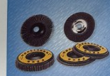
Aluminum oxide, zirconia & ceramic — general, iron-grinding and stainless variants
氧化铝 / 氧化锆 / 陶瓷平面砂布轮；磨铁型、通用型、不锈钢专用片；花叶轮；差异在磨料、背基与规格
船舶制造 · 汽车制造 · 通用机械
Shipbuilding · Automotive · General Machinery
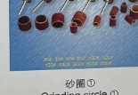
Standard flap wheels & M14/M16 mounted types for heavy grinding
千页轮、M14/M16 千页轮
船舶制造 · 汽车制造 · 通用机械
Shipbuilding · Automotive · General Machinery
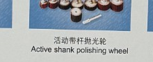
Standard, ball, tapered & active-shank mounted flap wheels
带柄页轮、球形带柄页轮、梯型带柄页轮、活柄页轮
汽车制造 · 航空航天 · 医疗器械
Automotive · Aerospace · Medical Devices
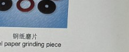
Abrasive discs & Black Diamond sanding sheet series
砂碟、砂纸片黑金刚系列
船舶制造 · 汽车制造
Shipbuilding · Automotive
High-rate disc grinding for heavy cut-down
高效盘片磨削，适用于重负荷开粗
船舶制造 · 汽车制造 · 通用机械
Shipbuilding · Automotive · General Machinery
Inquire →咨询 →Mounted points for precision grinding, hard materials and detailed finishing.
适用于精密磨削、硬材料加工 — 各类带柄磨头。
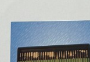
Various shank-mounted points for precision grinding applications
各种样式的带柄磨头，适用于精密磨削与异形加工
航空航天 · 通用机械 · 医疗器械
Aerospace · General Machinery · Medical Devices
Inquire →咨询 →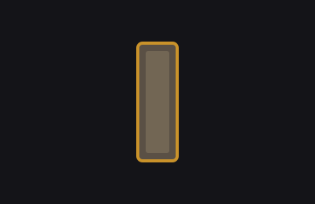
Ceramic bonded points for fine grinding of hard materials
陶瓷结合剂磨头，适用于硬材料精磨
航空航天 · 通用机械
Aerospace · General Machinery
Inquire →咨询 →Wool wheels, wire drawing wheels and emery cloth for buffing and surface refinement.
适用于金属表面抛光、拉丝及精饰 — 羊毛系列、拉丝轮、砂布卷等。

Wool flap wheels, discs & mounted points for buffing
羊毛页轮、羊毛磨盘、羊毛磨头
汽车制造 · 通用机械 · 医疗器械
Automotive · General Machinery · Medical Devices
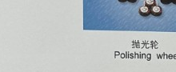
19-hole non-woven wire drawing wheel for satin finish
无纺布拉丝轮（19 孔），适用于表面拉丝与精饰
汽车制造 · 通用机械
Automotive · General Machinery
Inquire →咨询 →
Coated abrasive rolls for polishing prep and finishing
涂附砂布卷，适用于抛光前处理与精饰
船舶制造 · 汽车制造 · 通用机械
Shipbuilding · Automotive · General Machinery
Inquire →咨询 →Rubber & sesame points, non-woven discs, abrasive filament brushes and parallel wheels.
适用于去毛刺、棱边修整及表面清理 — 橡胶/芝麻磨头、无纺布磨盘、磨料丝刷系列等。
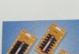
Standard & Type X rubber mounted points for deburring
橡胶磨头、橡胶磨头 X 型
汽车制造 · 通用机械 · 医疗器械
Automotive · General Machinery · Medical Devices
Standard & Type ZG sesame grinding points
芝麻磨头、芝麻磨头 ZG 型
汽车制造 · 通用机械
Automotive · General Machinery

Non-woven abrasive disc for deburring and blending
无纺布磨盘，适用于去毛刺与表面修整
汽车制造 · 船舶制造
Automotive · Shipbuilding
Inquire →咨询 →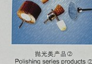
Abrasive filament & steel wire pen brushes
磨料丝笔刷、钢丝笔刷
航空航天 · 通用机械 · 医疗器械
Aerospace · General Machinery · Medical Devices
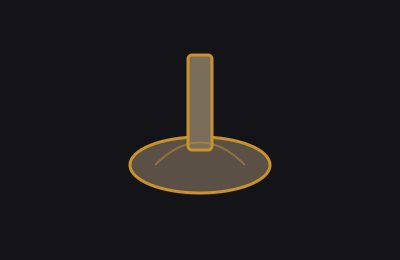
Abrasive filament, steel wire & sisal flower heads
磨料丝花头、钢丝花头、剑麻花头
通用机械 · 医疗器械
General Machinery · Medical Devices
Shank-mounted bowl-shaped abrasive filament brush
附柄碗形磨料丝刷，适用于曲面与边角清理
汽车制造 · 通用机械
Automotive · General Machinery
Inquire →咨询 →
Abrasive filament parallel wheel for edge blending
磨料丝平行轮，适用于平面与棱边清理拉丝
汽车制造 · 高铁
Automotive · High-Speed Rail
Inquire →咨询 →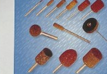
Horse hair for light polishing and fine cleaning
马毛刷，适用于轻抛与精细清理
医疗器械 · 通用机械
Medical Devices · General Machinery
Inquire →咨询 →Filter by application series to find the right category quickly.
按功能系列筛选，快速定位所需品类。
粗磨/重切削
船舶制造 · 汽车制造 · 通用机械
Shipbuilding · Automotive · General Machinery
粗磨/重切削
船舶制造 · 汽车制造 · 通用机械
Shipbuilding · Automotive · General Machinery
粗磨/重切削
汽车制造 · 航空航天 · 医疗器械
Automotive · Aerospace · Medical Devices
粗磨/重切削
船舶制造 · 汽车制造
Shipbuilding · Automotive
粗磨/重切削
船舶制造 · 汽车制造 · 通用机械
Shipbuilding · Automotive · General Machinery
咨询 →Inquire →精磨/超硬加工
航空航天 · 通用机械 · 医疗器械
Aerospace · General Machinery · Medical Devices
咨询 →Inquire →抛光/精饰
汽车制造 · 通用机械 · 医疗器械
Automotive · General Machinery · Medical Devices
抛光/精饰
船舶制造 · 汽车制造 · 通用机械
Shipbuilding · Automotive · General Machinery
咨询 →Inquire →清理/去毛刺
汽车制造 · 通用机械 · 医疗器械
Automotive · General Machinery · Medical Devices
清理/去毛刺
航空航天 · 通用机械 · 医疗器械
Aerospace · General Machinery · Medical Devices
清理/去毛刺
通用机械 · 医疗器械
General Machinery · Medical Devices
Our website groups products by application stage; GB/T 16458 defines abrasives by product form and bond type. Use this table to cross-reference.
官网按加工工况划分系列；GB/T 16458 按产品形态与结合剂类型分类。下表供对照参考。
| Site Series官网功能系列 | GB/T 16458 CategoryGB/T 16458 大类 | Representative Products代表品类 |
|---|---|---|
| 粗磨/重切削Rough Grinding | 涂附磨具Coated Abrasives | 平面砂布轮系列、千页轮、带柄页轮、砂碟、钢纸磨片Flap discs, flap wheels, mounted flap wheels, grinding discs, steel paper |
| 精磨/超硬加工Fine / Superhard | 固结磨具Bonded Abrasives | 带柄磨头、陶瓷磨头Mounted points, ceramic points |
| 抛光/精饰Polishing | 涂附磨具、抛光工具Coated & Polishing Tools | 羊毛系列、无纺布拉丝轮、砂布卷Wool wheels, wire drawing wheel, emery cloth roll |
| 清理/去毛刺Deburring | 涂附磨具、非磨料工具Coated & Brushes | 橡胶/芝麻磨头、无纺布磨盘、笔型刷、花头刷、碗形刷、平行轮、马毛Rubber/sesame points, non-woven disc, pen/flower/bowl brushes, parallel wheel, horse hair |
Non-standard specs across all application series — engineered to your drawing, application, and batch quantity.
粗磨、精磨、抛光、去毛刺等各系列均可非标定制 — 按您的图纸、工况与批量需求研制生产。
36 years of process data and field experience. Send your spec — we respond within 24 hours.
依托 36 年工艺积累与现场应用经验，欢迎提交规格需求 — 24 小时内回复。

Product catalog — contact us to receive
产品目录 — 联系我们获取
Our complete product range in one document. Share with your team, forward to procurement — professional catalog ready for B2B use.
完整产品系列一览。可分享给团队、转发采购部门 — 专业 B2B 产品目录。
⬇ Request Catalog⬇ 索取产品目录For detailed specs & pricing, please submit an inquiry — we respond within 24 hours.
详细规格与报价请提交询盘 — 我们 24 小时内回复。
Tell us your product category and quantity — response within 24 hours.
告知产品品类和数量 — 24 小时内回复。
Request a Quote获取报价